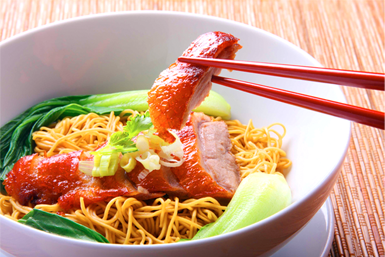

<!--
  Generated template for the MenuGeneratorPage page.

  See http://ionicframework.com/docs/components/#navigation for more info on
  Ionic pages and navigation.
-->
<ion-header>

  <ion-navbar>
    <ion-title>Menu Generator</ion-title>
  </ion-navbar>

</ion-header>

<ion-content>

  <div class="container">

    <div class="container-scroll">
      <!-- segment -->
      <div class="header-select">
        <ion-segment
          [(ngModel)]="type"
          color="primary"
          (ionChange)="segmentChanged($event)">

          <ion-segment-button [value]="TYPE_AUTO">
            Generate Menu
          </ion-segment-button>
          <ion-segment-button [value]="TYPE_MANUAL">
            Manual Menu
          </ion-segment-button>
        </ion-segment>
      </div>

      <!-- name -->
      <div
        class="input-item"
        style="margin-top: 12px;">
        <ion-input placeholder="Menu Name"></ion-input>
      </div>

      <!-- date -->
      <div
        class="input-item"
        (click)="onCalendar()">
        <ion-input placeholder="Date" readonly></ion-input>
        <ion-icon name="md-calendar"></ion-icon>
      </div>

      <!-- filter (auto) -->
      <div
        class="input-item"
        *ngIf="type == TYPE_AUTO"
        (click)="onToggleFilter()">
        <ion-input placeholder="Filters" readonly></ion-input>
        <ion-icon
          [name]="filterOn ? 'ios-arrow-up' : 'ios-arrow-down'">
        </ion-icon>
      </div>

      <!-- filter content -->
      <div
        *ngIf="type == TYPE_AUTO"
        class="filter-options"
        [class.collapsed]="filterOn == false">

        <!-- use presets -->
        <ion-list>
          <ion-item no-lines>
            <ion-label>Use presets?</ion-label>
            <button
              ion-button icon-only item-end
              (click)="onButPreset()">
              <ion-icon [name]="usePreset ? 'md-checkbox-outline' : 'md-square-outline'"></ion-icon>
            </button>
          </ion-item>
        </ion-list>

        <ion-list class="accordion">
          <!-- favourites -->
          <button
            ion-item detail-none
            color="primary"
            (click)="onButAccordion(0)">
            <ion-label>Favorite Cuisines</ion-label>
            <ion-icon
              item-end
              [name]="filterAccIndex == 0 ? 'ios-arrow-up' : 'ios-arrow-down'">
            </ion-icon>
          </button>

          <!-- content -->
          <div
            class="container-scroll content"
            [class.collapsed]="filterAccIndex != 0">
            <ion-row nowrap>
              <ion-col col-4 *ngFor="let data of favourites">
                <cuisine-item
                  [index]="CUISINE_FAVOURITE"
                  [item]="data">
                </cuisine-item>
              </ion-col>
            </ion-row>
          </div>

          <!-- allergies -->
          <button
            ion-item detail-none
            color="primary"
            (click)="onButAccordion(1)">
            <ion-label>Allergies</ion-label>
            <ion-icon
              item-end
              [name]="filterAccIndex == 1 ? 'ios-arrow-up' : 'ios-arrow-down'">
            </ion-icon>
          </button>

          <!-- content -->
          <div
            class="container-scroll content"
            [class.collapsed]="filterAccIndex != 1">
            <ion-row nowrap>
              <ion-col col-4 *ngFor="let data of allergies">
                <cuisine-item
                  [index]="CUISINE_ALLERGY"
                  [item]="data">
                </cuisine-item>
              </ion-col>
            </ion-row>
          </div>

          <!-- diets -->
          <button
            ion-item detail-none
            color="primary"
            (click)="onButAccordion(2)">
            <ion-label>Dietary Restrictions</ion-label>
            <ion-icon
              item-end
              [name]="filterAccIndex == 2 ? 'ios-arrow-up' : 'ios-arrow-down'">
            </ion-icon>
          </button>

          <!-- content -->
          <div
            class="container-scroll content"
            [class.collapsed]="filterAccIndex != 2">
            <ion-row nowrap>
              <ion-col col-4 *ngFor="let data of diets">
                <cuisine-item
                  [index]="CUISINE_DIET"
                  [item]="data">
                </cuisine-item>
              </ion-col>
            </ion-row>
          </div>

          <!-- dislikes -->
          <button
            ion-item detail-none
            color="primary"
            (click)="onButAccordion(3)">
            <ion-label>Dislikes</ion-label>
            <ion-icon
              item-end
              [name]="filterAccIndex == 3 ? 'ios-arrow-up' : 'ios-arrow-down'">
            </ion-icon>
          </button>

          <!-- content -->
          <div
            class="container-scroll content"
            [class.collapsed]="filterAccIndex != 3">
            <ion-row nowrap>
              <ion-col col-4 *ngFor="let data of dislikes">
                <cuisine-item
                  [index]="CUISINE_DISLIKE"
                  [item]="data">
                </cuisine-item>
              </ion-col>
            </ion-row>
          </div>
        </ion-list>

      </div>

      <!-- add recipe (manual) -->
      <div
        class="input-item"
        *ngIf="type == TYPE_MANUAL">
        <ion-input placeholder="Add a Recipe" readonly></ion-input>
        <ion-icon name="md-add-circle"></ion-icon>
      </div>

      <!-- added recipes -->
      <div
        class="added"
        *ngIf="type == TYPE_MANUAL">
        <div class="div-title">
          Added Recipes
        </div>

        <!-- recipe -->
        <div class="dv-no-list-item flex-c-row nm-center"
             *ngIf="added.length == 0; else listAdded">
          <span>No added recipes yet</span>
        </div>

        <ng-template #listAdded>
          <ion-card
            class="recipe-row-item flex-row"
            *ngFor="let data of added"
            (click)="onRecipeDetail(data)">
            <!-- image -->
            <div class="photo">
              
            </div>

            <!-- info -->
            <div class="info flex-column">
              <!-- title -->
              <span class="recipe-title">Asian Barbecue Pork Ribs</span>
              <!-- desc -->
              <span class="recipe-desc">
                May 11, 2018
              </span>
            </div>

          </ion-card>
        </ng-template>

      </div>
    </div>

    <!-- button -->
    <div class="buttons">
      <button
        ion-button full
        class="button-primary"
        (click)="onButGenerate()">
        Generate Menu
      </button>
    </div>

  </div>

</ion-content>
